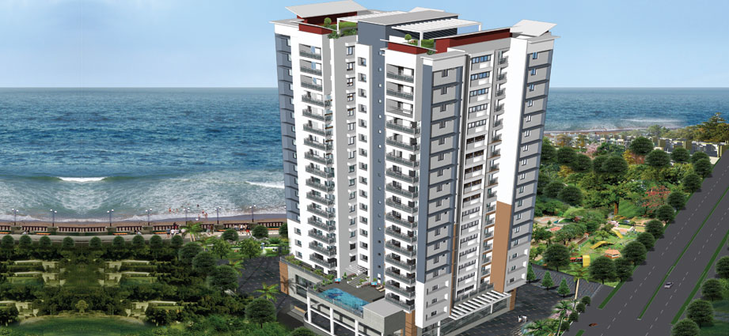
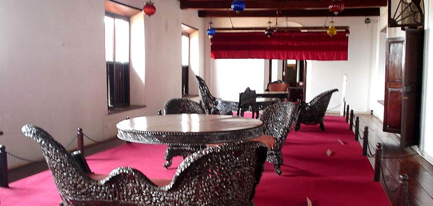
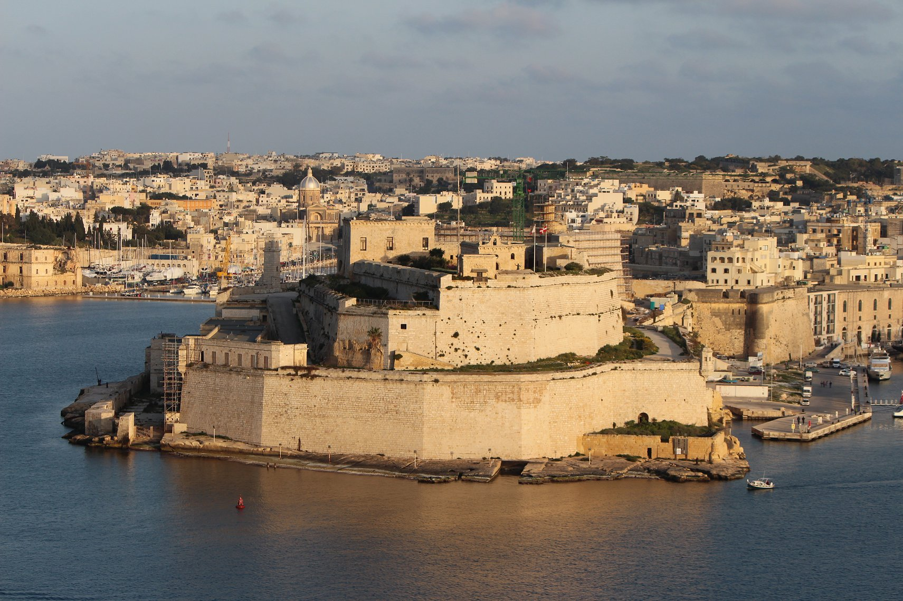

1 / 3

Caption Text
1 / 3

Caption Text
2 / 3

Caption Two
3 / 3

Caption Three
Click on the element below to open the side navigation menu.
☰ openKannur, also known by its anglicised name Cannanore,is a city and a Municipal Corporation in Kannur district, state of Kerala, India. It is the administrative headquarters of the Kannur District and situated 518 km north of the state capital Thiruvananthapuram. During British rule in India, Kannur was known as Cannanore, a name that is still in use by the Indian Railways.[2] Kannur is the largest city of North Malabar region. Kannur is one of the million-plus urban agglomerations in India with a population of 1,642,892 in 2011. Kannur district is known as the land of Looms and Lores, because of the weaving industry functioning in the district and ritualistic folk arts held in temples. Kannur is famous for its pristine beaches, Theyyam (its native performing art), and its handloom industry. Kannur is of great strategic military importance in India. Kannur Cantonment is one of the 62 military cantonments in the country and is the headquarters of the Defence Security Corps and Territorial Army’s 122 Infantry Battalion (part of the Madras Regiment). The Indian Naval Academy (INA) is 35 km north of Kannur City. It is Asia's largest and the world's third largest naval academy. An Indian Coast Guard Academy has received approval to be built at Kannur. This academy will be built on the banks of Valapattanam River at Irinave, east of Azhikkal.
Muzhappilangad Drive-in Beach is a beach in the state of Kerala in southwestern India. It is located parallel to National Highway 66(formerly National Highway 17) between Thalassery and Kannur.This beach is the longest Drive-In Beach in India and is featured among the top 6 best beaches for driving in the world in BBC article for Autos.[2] Even though Goa has many beautiful beaches, it does not have a Drive-in beach.longest drive in beach in AsiaThe beach festival is celebrated in the month of April and it is one of the important tourist attraction in the district of Kannur in Kerala. The youth also try many driving stunts in cars like drifting and wheeling in bikes as this is a paradise for driving along the shore. Just 100m from this beach you would find a private island Dharmadam island, which can be reached by walk at times of low tide
The Arrakkal Museum is a museum dedicated to the Arakkal family, the only Muslim royal family in Kerala, South India. The museum is actually a section of the Arakkalkettu(Arakkal Royal Palace). The durbar hall section of the palace has been converted into a museum by the Government of Kerala. It was opened in July 2005 after a Rs. 9,000,000 renovation.Although renovated by the government, the Arakkalkettu is still owned by the Arakkal Royal Trust and does not fall under the control of the country's archaeology department, the Archaeological Survey of India. The government had taken a keen interest in preserving the heritage of the Arakkal Family, which had played a prominent role in the history of Malabar. A nominal entry fee is charged by the Arakkal Royal Trust from visitors to the museum.nt light was installed, there were no lighthouses at this location. A day mark beacon (flag mast) must have been there in 18th century. After 19th century, this port was in a neglected state. A lighted beacon was constructed in 1925 at nearby Kolachal. Subsequently, a day mark beacon was provided at Vilinjam during 1960
St. Angelo's Fort was built in 1505 by Dom Francisco de Almeida, the first Portuguese Viceroy of India on the Arabian sea coast about 2 km from Kannur town. It was attacked in vain by the local Indian ruler Zamorin and kolathiri in the Siege of Cannanore (1507).Fort at KannurIn August 1509 Almeida, refusing to recognize Afonso de Albuquerque's as the new Portuguese governor to supersede himself, arrested him in this fortress after having fought the naval Battle of Diu. Afonso de Albuquerque was released after six months' confinement, and become governor on the arrival of the grand-marshal of Portugal with a large fleet, in October 1509.[1]The Dutch captured the fort from the Portuguese in 1663. They modernised the fort and built the bastions Hollandia, Zeelandia and Frieslandia that are the major features of the present structure. The original Portuguese fort was pulled down later. A painting of this fort and the fishing ferry behind it can be seen in the Rijksmuseum Amsterdam. The Dutch sold the fort to king Ali Raja of Arakkal in 1772. In 1790 the British seized it and used it as their chief military station in Malabar until 1947.